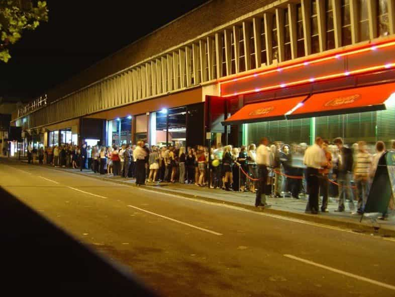

Kyle is an entrepreneur and nomad who has been living abroad since 2016. He blogs at This Is Trouble. Follow him on Facebook.


Exclusivity is always going to be the name of the game. As I write this from a cafe in Wroclaw, Poland (the first European city I ever went to), I realize now that if you want to continue to seek you must seek new destinations. You must move up in frequenting higher-end venues that keep out the riff-raff.
Why do guys go to places like Wroclaw? For pretty Polish girls and vodka, of course. But, things have changed drastically since 2014. Roosh and I detailed this in a podcast, and I’ve written about it before, too.
In 2014, on a weekend night, I walked into a club with a friend. We were the only guys in there, and were surrounded by 20 girls. Nearly all of them had dresses and heels on. This weekend, I walked into a club, and most of them had foregone the heels and dresses for baggy jeans and Chuck Taylors. There were five guys for every one girl. Talk about a 180.
Well, girls are going out less now, that’s for sure. The explosion of the online dating game has changed this drastically. Now, you can use a nightclub as an excellent measure of how healthy a sexual marketplace really is.
If girls have to go out to meet a guy, that’s great for guys. And actually, it’s great for girls—it keeps their egos in relative check—at least in comparison to the mammoth mountains where they currently reside. Nowadays though, a girl gets all of the options she could ever need (and a lot more) from her smartphone.
I could sit here and complain about that, but it’s better to move forward. How? By seeking places that are more exclusive. Too many guys have an abundance mindset with women (or at least they preach it). But yet, they don’t have that same abundance mindset about money. I realize now, I used to be one of those guys.
$10 cover? Too expensive.
Drinks that are 25% more than the “usual” places? Pass.
I’ve been trying to shift this mindset recently because I’ve realized the benefits of it. Rather than trying to play with everybody else, I’d much rather pay the extra fees and be part of the exclusive crowd rather than the low-end. It does take a certain amount of age, experience, and overall weariness with how things have changed to reach this conclusion—in my case, several years.
Of course you can. But it’s the matter of enjoyment. By human nature, we want what we can’t have. So when a girl is getting approached dozens of times in an hour, she’s far less likely to turn away the next guy. In reverse, if the girls outnumber the guys, she knows she has to give every one a chance to get what she’s looking for.
Plus, in older times (meaning 2014), girls would actually go out to clubs to meet a man for a relationship. Until the smartphone dating app scene took off, their only options to meet a guy were work, social circle, or “old school” internet dating where you actually had to send a message. If none of those were options, girls would go out to clubs for opportunities.
There’s just something about being surrounded by hundreds of other guys all vying for the attention of girls that turns most people off. Even the best players in the world will have this wear on them over time. I wish I could say I’ve found some fix for being able to power through—but I haven’t. Other than to buy your way up and out of the cesspool.

We all know that girl’s skills with money management and financial planning are lackluster at best. So it would be a fair assumption that cover charges and high-priced drinks would deter some women from getting into these venues.
Of course, it’s going to vary from place to place. Even in places like Las Vegas, sometimes cover charges for girls are north of $50 (while being $100+ for guys). But, the hottest of the hot girls usually find some way or another to get into these places—so it has the added bonus of filtering out the lower-quality girls, too. High-end places want the hottest girls—it’s the equivalent to parking the Lamborghini in the front of the hotel valet. It shows status.
Plus, girls want a winner. The highest quality girls know their value, and typically won’t settle for anything less than a high-value man. Girls in 2017 are always trying to date up, hence why you see so many land whales with relatively attractive dudes. Now that we know the hot girls will still fill these venues, the simple solution to the problem of nightgame being overrun and over is to simply move up in life.
So the next time you’re out and you’re bitching about a $10 cover charge, maybe re-think that philosophy. $10 is all that’s standing in the way of you and meeting the top girls that only the top guys have access to. Everybody else is behind.
And if you don’t have $10? Well, it’s time to increase the money abundance in addition to women. And until you do, it’s safe to say that nightgame is only going to continue getting tougher and less enjoyable for you.
Check out my podcast for more great wisdom about travel and game. Want to start building your own funnel of girls? Learn how in my book.
Read More: 5 Things You’ll Notice About Online Dating In 2017